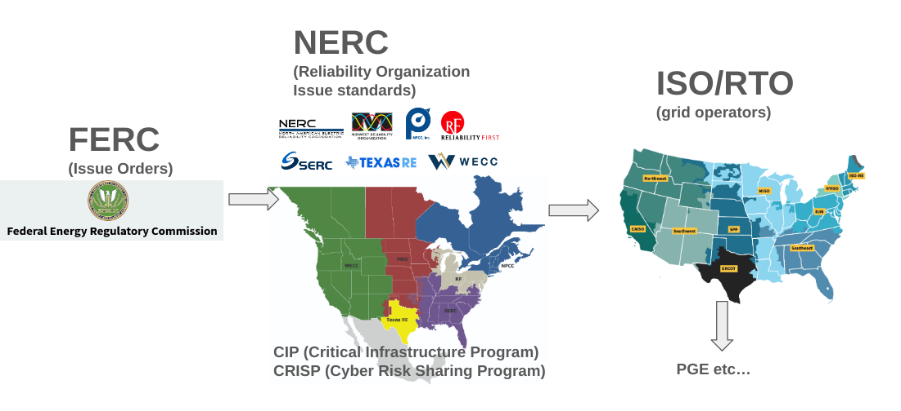
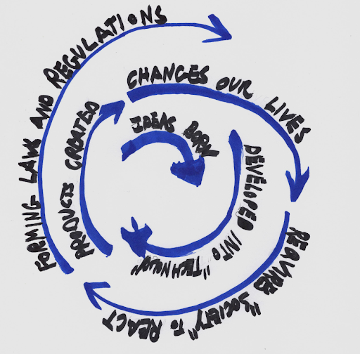

A bit on what standards are and what they do in other industries


Standards often feel wired or not the most rational, as they a often "solidified over time rather than cast in a mold"
In all the other cybersecurity paperwork
Standards are critically needed in cybersecurity, it is shocking how much is left unregulated in the hands of business (with the whole context thereof (short sighted ness)(only answering ot shareholders) etc..))